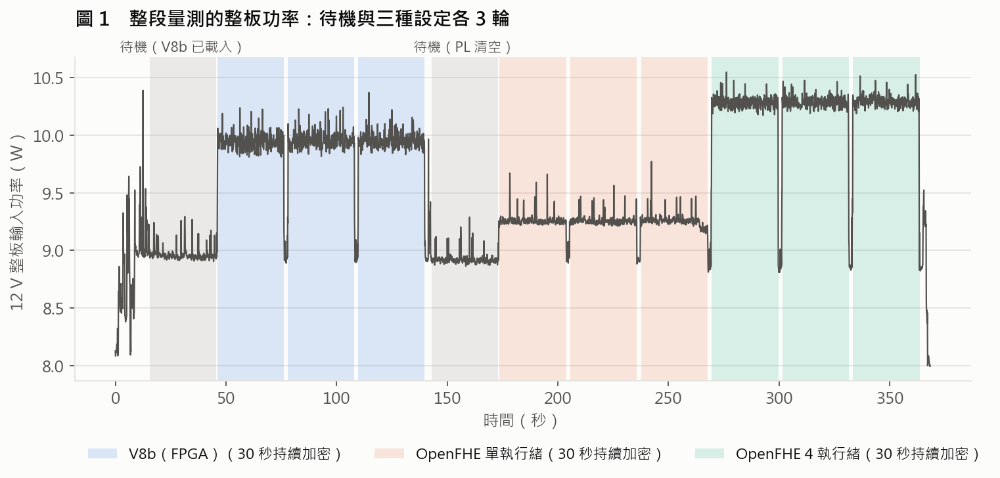
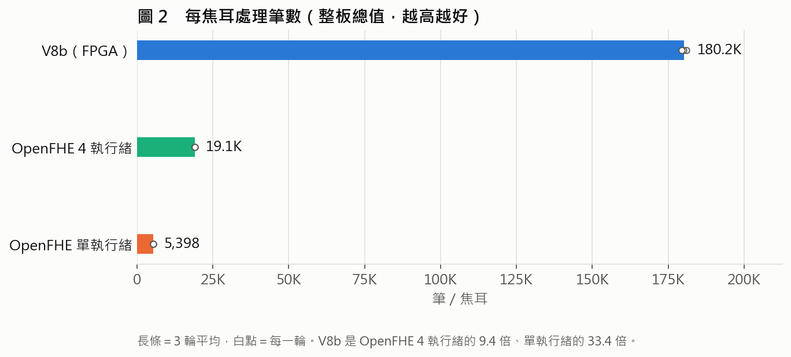
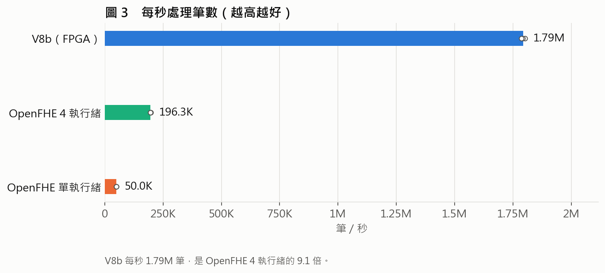
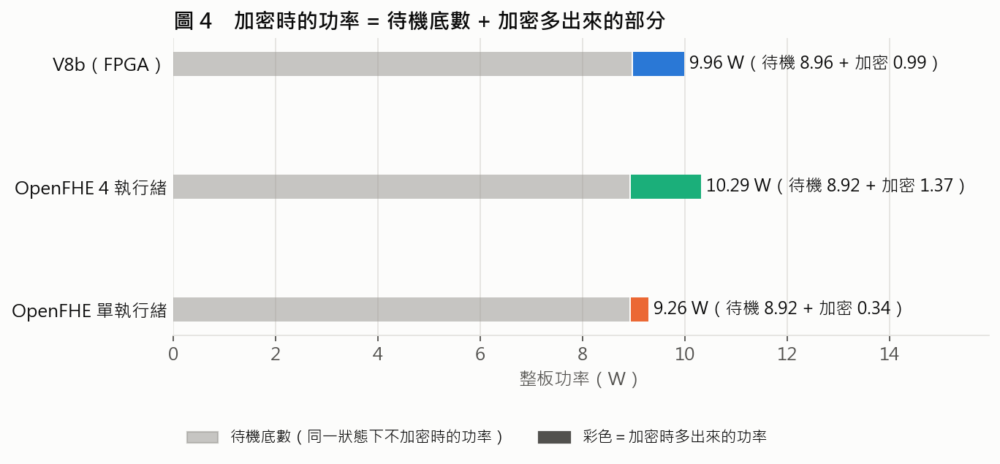
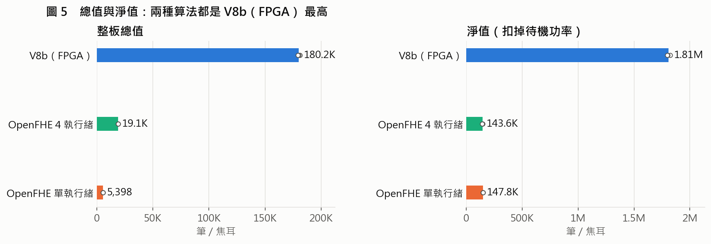
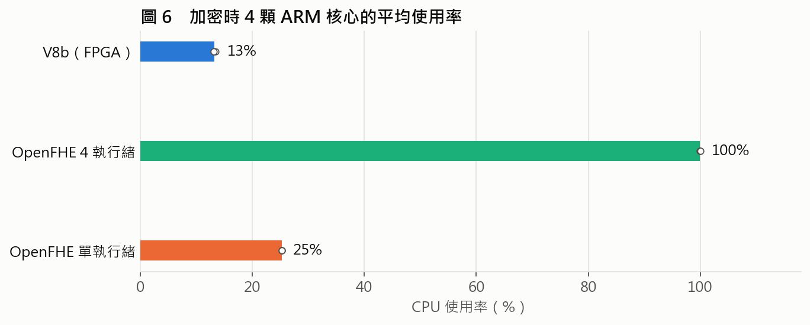
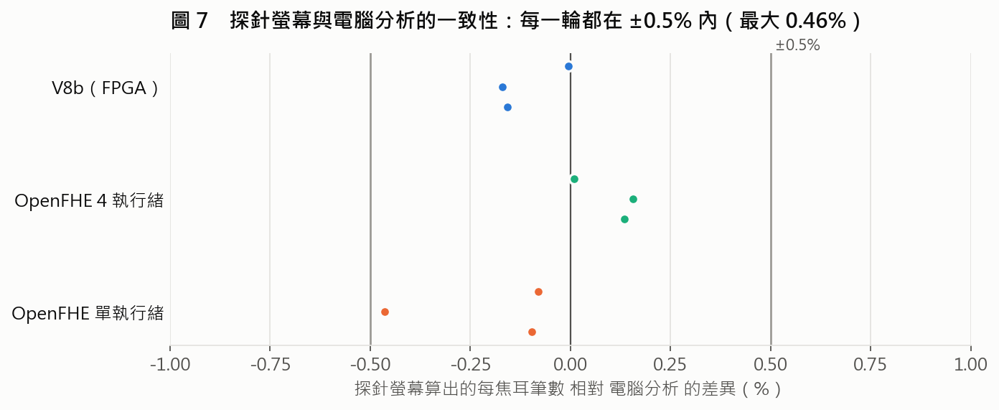

量測日期：2026-11-23（UTC 10:41–10:47） 平台：KV260（Ubuntu 22.04，4 × Cortex-A53 1.333 GHz） 量測：ESP32-S3 + INA228 整板探針（12 V 輸入端）
| 項目 | 內容 |
|---|---|
| 比較對象 | V8b rev5（FPGA 加密） OpenFHE 1.5.1，4 執行緒 OpenFHE 1.5.1，單執行緒 |
| 共同參數 | CKKS，N = 4096，每個密文 2048 個 slot，3 個 RNS 模數（約 88.6 位元），公鑰加密。OpenFHE 實際選出的模數為 1073692673／536813569／536903681，與 repo 文件（docs/NATIVE_V4.md 4.4 節）的 OpenFHE 對照組相同。 |
| 工作定義 | 三種設定相同：每個 frame 8 個密文，8 筆明文事先編碼一次，迴圈內只做加密，連續 30 秒；第一個與最後一個 frame 皆檢查正確性（V8b 逐位元比對；OpenFHE 解密誤差 < 10⁻³，實測約 1×10⁻⁴）。 |
| 筆數換算 | 每筆資料 4 個特徵（CDC 模型），每個密文裝 2048 筆的同一個特徵，故 1 個密文 = 512 筆。 |
| 能量量測 | INA228 串接於 KV260 的 12 V 輸入（整板），每 0.1 秒一筆；探針未校正（K = 1）。兩種設定的比值不受校正影響。 |
| 總值與淨值 | 總值 = 筆數 ÷ 這 30 秒的整板能量。淨值 = 筆數 ÷［（加密時功率 − 同一狀態的待機功率）× 秒數］。 |
| 待機狀態 | V8b：載入 V8b 硬體與驅動，不執行加密。OpenFHE：PL 清空（不載入任何 FPGA 設計），代表純 CPU 的部署方式。 |
| 重複次數 | 每種設定 3 輪，每輪 30 秒；表中 ± 為 3 輪的標準差。 |







| 設定 | 每秒筆數 | 加密時功率 | 待機功率 | 每焦耳筆數（總值） | 每焦耳筆數（淨值） | 每 2048 筆能量 | CPU |
|---|---|---|---|---|---|---|---|
| V8b（FPGA） | 1,793,488 | 9.955 W | 8.964 W | 180,152 ± 834 | 1,808,261 | 11.4 mJ | 13% |
| OpenFHE 4 執行緒 | 196,273 | 10.289 W | 8.922 W | 19,075 ± 42 | 143,552 | 107.4 mJ | 100% |
| OpenFHE 單執行緒 | 49,986 | 9.260 W | 8.922 W | 5,398 ± 16 | 147,815 | 379.4 mJ | 25% |
| 內容 | 位置（桌面 EdgeFHE_能耗探針\ 底下） |
|---|---|
| 原始資料 | data\v8b_vs_openfhe_20261123_184118\probe.csv（探針每 0.1 秒一筆）、runs.json（每輪板子輸出與時間點） |
| 分析結果與圖表 | summary.json、figures\*.png、figures\summary_table.csv |
| 量測與分析工具 | kv260\（見 README.txt） |
| 板上程式 | V8b：~/edgefhe-v8b-r5/test/board_enc_check sustain 30 8；OpenFHE：~/openfhe_bench/build/openfhe_sustain 30 8 {1|4}（OpenFHE 1.5.1 安裝於 ~/.local/openfhe-v1.5.1） |